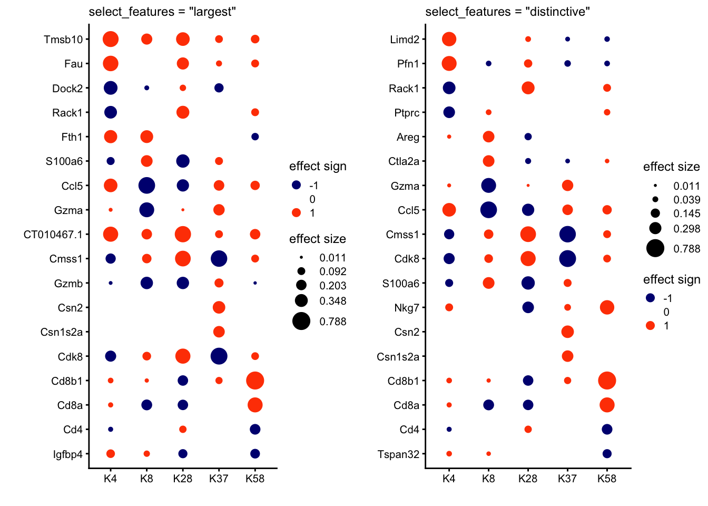
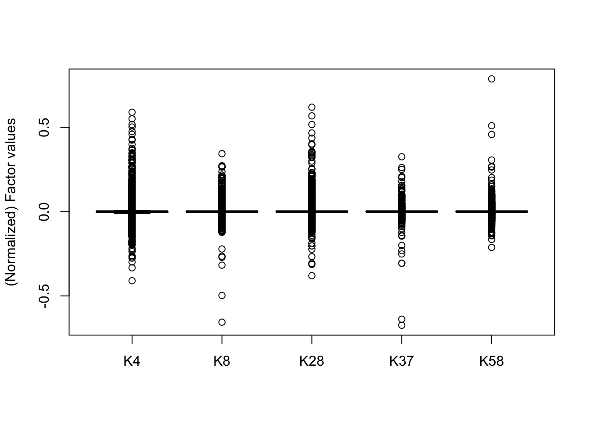
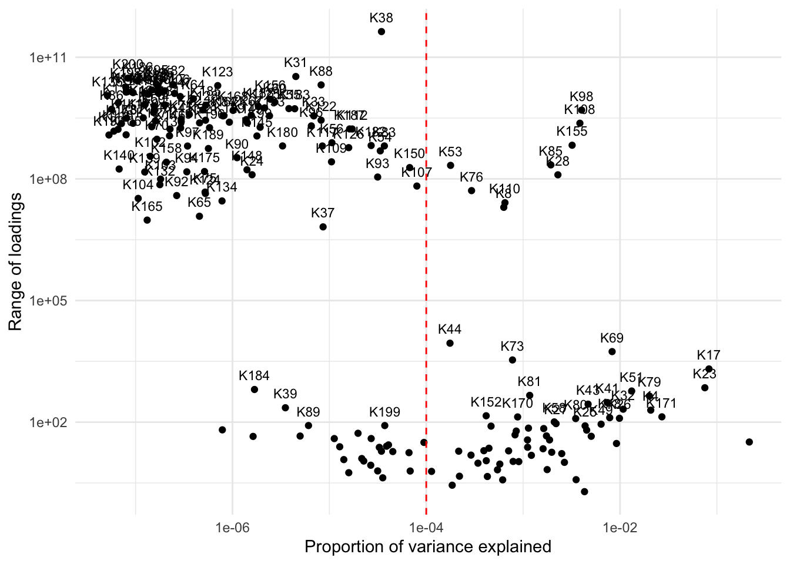

Last updated: 2025-10-08
Checks: 7 0
Knit directory: immgen-t-factors/analysis/
This reproducible R Markdown analysis was created with workflowr (version 1.7.1). The Checks tab describes the reproducibility checks that were applied when the results were created. The Past versions tab lists the development history.
Great! Since the R Markdown file has been committed to the Git repository, you know the exact version of the code that produced these results.
Great job! The global environment was empty. Objects defined in the global environment can affect the analysis in your R Markdown file in unknown ways. For reproduciblity it’s best to always run the code in an empty environment.
The command set.seed(1) was run prior to running the
code in the R Markdown file. Setting a seed ensures that any results
that rely on randomness, e.g. subsampling or permutations, are
reproducible.
Great job! Recording the operating system, R version, and package versions is critical for reproducibility.
Nice! There were no cached chunks for this analysis, so you can be confident that you successfully produced the results during this run.
Great job! Using relative paths to the files within your workflowr project makes it easier to run your code on other machines.
Great! You are using Git for version control. Tracking code development and connecting the code version to the results is critical for reproducibility.
The results in this page were generated with repository version 11036e0. See the Past versions tab to see a history of the changes made to the R Markdown and HTML files.
Note that you need to be careful to ensure that all relevant files for
the analysis have been committed to Git prior to generating the results
(you can use wflow_publish or
wflow_git_commit). workflowr only checks the R Markdown
file, but you know if there are other scripts or data files that it
depends on. Below is the status of the Git repository when the results
were generated:
Ignored files:
Ignored: .Rhistory
Ignored: .Rproj.user/
Ignored: analysis/site_libs/
Untracked files:
Untracked: .DS_Store
Untracked: .gitignore
Untracked: analysis/.DS_Store
Untracked: analysis/UMAP_factors.rmd
Untracked: code/.DS_Store
Untracked: code/ROC.R
Untracked: code/analyze_protein.R
Untracked: code/analyze_protein.sbatch
Untracked: code/analyze_protein_selected.R
Untracked: code/analyze_protein_selected.sbatch
Untracked: code/halves_validation1.R
Untracked: code/halves_validation2.R
Untracked: code/replicate_whole_data.sbatch
Untracked: data/.DS_Store
Untracked: data/annot_level1.rds
Untracked: data/annot_level2.rds
Untracked: data/condition_broad.rds
Untracked: data/condition_broad_AUC.rds
Untracked: data/condition_detailed.rds
Untracked: data/condition_detailed_AUC.rds
Untracked: data/flash_fixed_F_pm.rds
Untracked: data/flash_fixed_loading.rds
Untracked: data/flashier_snmf_summary.rds
Untracked: data/level_1_AUC.rds
Untracked: data/organ.rds
Untracked: data/organ_AUC.rds
Untracked: data/protein_flash_selected_summary.rds
Untracked: data/protein_mat.rds
Untracked: data/protein_mat_normalized.rds
Untracked: data/replicate_whole_data.sbatch
Untracked: data/seurat_meta.rds
Untracked: data/umap_result.rds
Unstaged changes:
Deleted: code/halves_validation.R
Note that any generated files, e.g. HTML, png, CSS, etc., are not included in this status report because it is ok for generated content to have uncommitted changes.
These are the previous versions of the repository in which changes were
made to the R Markdown (analysis/outliers.rmd) and HTML
(docs/outliers.html) files. If you’ve configured a remote
Git repository (see ?wflow_git_remote), click on the
hyperlinks in the table below to view the files as they were in that
past version.
| File | Version | Author | Date | Message |
|---|---|---|---|---|
| Rmd | 11036e0 | Ziang Zhang | 2025-10-08 | workflowr::wflow_publish("analysis/outliers.rmd") |
Here we will investigate the outlier observations.
source("https://raw.githubusercontent.com/stephenslab/single-cell-jamboree/refs/heads/main/code/group_factors.R")
library(fastTopics)
library(cowplot)
library(ggplot2)Warning: package 'ggplot2' was built under R version 4.3.3Read in the meta-information and the factorization result:
data_path <- "../data/"
code_path <- "../code/"
# data_path <- "data/"
# code_path <- "code/"
source(paste0(code_path, "ROC.R"))
seurat_meta <- readRDS(paste0(data_path, "seurat_meta.rds"))
flashier_snmf_summary <- readRDS(paste0(data_path, "flashier_snmf_summary.rds"))
colnames(flashier_snmf_summary$F_pm) <- paste0("K", 1:ncol(flashier_snmf_summary$F_pm))# Normalize the L matrix based on 99 quantile
D <- diag(1 / apply(flashier_snmf_summary$L_pm, 2, function(x) quantile(x,0.99)))
L_pm <- flashier_snmf_summary$L_pm %*% D
F_pm <- flashier_snmf_summary$F_pm %*% solve(D)
colnames(F_pm) <- paste0("K", 1:ncol(F_pm))
cells_flashier <- rownames(flashier_snmf_summary$L_pm)
cells_seurat <- seurat_meta$cellID
which(!cells_flashier %in% cells_seurat)[1] 140070 505759L_pm <- L_pm[cells_flashier %in% cells_seurat, ]
all(rownames(L_pm) == cells_seurat)[1] TRUEL_pm_old <- L_pm
colnames(L_pm_old) <- paste0("K", 1:ncol(L_pm_old))
L_pm <- L_pm_old[, flashier_snmf_summary$pve > 1e-4]Find a few factors with huge range of loadings:
# compute ranges
range_loadings <- apply(L_pm_old, 2, function(x) max(x) - min(x))
# the factors with very large ranges
top_factors <- colnames(L_pm_old)[which(range_loadings >= 80)]
top_factors [1] "K4" "K8" "K17" "K19" "K23" "K24" "K25" "K26" "K27" "K28"
[11] "K31" "K32" "K33" "K37" "K38" "K39" "K41" "K42" "K43" "K44"
[21] "K45" "K47" "K48" "K49" "K51" "K52" "K53" "K54" "K55" "K56"
[31] "K58" "K59" "K60" "K64" "K65" "K66" "K67" "K69" "K70" "K71"
[41] "K73" "K75" "K76" "K78" "K79" "K80" "K81" "K82" "K83" "K84"
[51] "K85" "K86" "K87" "K88" "K89" "K90" "K91" "K92" "K93" "K94"
[61] "K95" "K96" "K97" "K98" "K99" "K102" "K103" "K104" "K105" "K106"
[71] "K107" "K108" "K109" "K110" "K111" "K112" "K113" "K114" "K115" "K116"
[81] "K117" "K122" "K123" "K124" "K125" "K126" "K128" "K129" "K131" "K132"
[91] "K133" "K134" "K136" "K137" "K138" "K139" "K140" "K141" "K142" "K143"
[101] "K144" "K145" "K146" "K147" "K148" "K149" "K150" "K152" "K155" "K156"
[111] "K157" "K158" "K160" "K164" "K165" "K167" "K168" "K170" "K171" "K172"
[121] "K175" "K178" "K179" "K180" "K182" "K183" "K184" "K185" "K186" "K187"
[131] "K188" "K189" "K190" "K191" "K193" "K194" "K195" "K196" "K198" "K199"
[141] "K200"Take a look at their (normalized) values of F:
kset <- c("K4", "K8", "K28", "K37", "K58")
F_pm_subset <- flashier_snmf_summary$F_pm[, kset]
# Normalize F_pm_subset by columns range to [-1, 1]
D_f <- diag(1 / apply(F_pm_subset, 2, function(x) max(x) - min(x) ))
F_pm_subset_normalized <- F_pm_subset %*% D_f
rownames(F_pm_subset_normalized) <- rownames(F_pm_subset)
colnames(F_pm_subset_normalized) <- colnames(F_pm_subset)
p1 <- annotation_heatmap(F_pm_subset_normalized,n = 2,
dim = kset,
show_dims = kset,
select_features = "largest",
font_size = 9) +
labs(title = "select_features = \"largest\"") +
theme(plot.title = element_text(face = "plain",size = 9))# Features selected for plot: Tmsb10 Fau Dock2 Rack1 Fth1 S100a6 Ccl5 Gzma CT010467.1 Cmss1 Gzmb Csn2 Csn1s2a Cdk8 Cd8b1 Cd8a Cd4 Igfbp4
c("Tmsb10", "Fau", "Dock2", "Rack1", "Fth1", "S100a6", "Ccl5",
"Gzma", "CT010467.1", "Cmss1", "Gzmb", "Csn2", "Csn1s2a", "Cdk8",
"Cd8b1", "Cd8a", "Cd4", "Igfbp4")p2 <- annotation_heatmap(F_pm_subset_normalized,n = 2,
dim = kset,
show_dims = kset,
select_features = "distinctive",
compare_dims = kset,
font_size = 9) +
labs(title = "select_features = \"distinctive\"") +
theme(plot.title = element_text(face = "plain",size = 9))# Features selected for plot: Limd2 Pfn1 Rack1 Ptprc Areg Ctla2a Gzma Ccl5 Cmss1 Cdk8 S100a6 Nkg7 Csn2 Csn1s2a Cd8b1 Cd8a Cd4 Tspan32
c("Limd2", "Pfn1", "Rack1", "Ptprc", "Areg", "Ctla2a", "Gzma",
"Ccl5", "Cmss1", "Cdk8", "S100a6", "Nkg7", "Csn2", "Csn1s2a",
"Cd8b1", "Cd8a", "Cd4", "Tspan32")plot_grid(p1,p2,nrow = 1,ncol = 2)
boxplot(F_pm_subset_normalized, ylab = "(Normalized) Factor values")
The majority of factors that have large range of loadings are factors that have very small pve (e.g. pve < 1e-4):
pve_df <- data.frame(K = colnames(flashier_snmf_summary$F_pm),
pve = flashier_snmf_summary$pve,
range = range_loadings)
ggplot(pve_df, aes(x = pve, y = range)) +
geom_point() +
geom_text(data = subset(pve_df, K %in% top_factors),
aes(label = K), vjust = -1, size = 3) +
scale_x_log10() +
scale_y_log10() +
# add a vertical line at pve = 1e-4
geom_vline(xintercept = 1e-4, linetype = "dashed", color = "red") +
labs(x = "Proportion of variance explained",
y = "Range of loadings") +
theme_minimal()
sessionInfo()R version 4.3.1 (2023-06-16)
Platform: aarch64-apple-darwin20 (64-bit)
Running under: macOS 15.6.1
Matrix products: default
BLAS: /Library/Frameworks/R.framework/Versions/4.3-arm64/Resources/lib/libRblas.0.dylib
LAPACK: /Library/Frameworks/R.framework/Versions/4.3-arm64/Resources/lib/libRlapack.dylib; LAPACK version 3.11.0
locale:
[1] en_US.UTF-8/en_US.UTF-8/en_US.UTF-8/C/en_US.UTF-8/en_US.UTF-8
time zone: America/Chicago
tzcode source: internal
attached base packages:
[1] stats graphics grDevices utils datasets methods base
other attached packages:
[1] ggplot2_3.5.2 cowplot_1.1.3 fastTopics_0.7-25
loaded via a namespace (and not attached):
[1] gtable_0.3.6 xfun_0.52 bslib_0.9.0
[4] htmlwidgets_1.6.4 ggrepel_0.9.6 lattice_0.22-6
[7] quadprog_1.5-8 vctrs_0.6.5 tools_4.3.1
[10] generics_0.1.4 parallel_4.3.1 tibble_3.2.1
[13] pkgconfig_2.0.3 Matrix_1.6-4 data.table_1.16.2
[16] SQUAREM_2021.1 RColorBrewer_1.1-3 RcppParallel_5.1.9
[19] lifecycle_1.0.4 truncnorm_1.0-9 compiler_4.3.1
[22] farver_2.1.2 stringr_1.5.1 git2r_0.33.0
[25] progress_1.2.3 RhpcBLASctl_0.23-42 httpuv_1.6.16
[28] htmltools_0.5.8.1 sass_0.4.10 yaml_2.3.10
[31] lazyeval_0.2.2 plotly_4.10.4 later_1.4.2
[34] pillar_1.10.2 crayon_1.5.3 jquerylib_0.1.4
[37] whisker_0.4.1 tidyr_1.3.1 uwot_0.1.16
[40] cachem_1.1.0 gtools_3.9.5 tidyselect_1.2.1
[43] digest_0.6.37 Rtsne_0.17 stringi_1.8.7
[46] reshape2_1.4.4 dplyr_1.1.4 purrr_1.0.4
[49] ashr_2.2-66 rprojroot_2.0.4 fastmap_1.2.0
[52] grid_4.3.1 cli_3.6.5 invgamma_1.1
[55] magrittr_2.0.3 withr_3.0.2 prettyunits_1.2.0
[58] scales_1.4.0 promises_1.3.3 rmarkdown_2.28
[61] httr_1.4.7 workflowr_1.7.1 hms_1.1.3
[64] pbapply_1.7-2 evaluate_1.0.3 knitr_1.50
[67] irlba_2.3.5.1 viridisLite_0.4.2 rlang_1.1.6
[70] Rcpp_1.0.14 mixsqp_0.3-54 glue_1.8.0
[73] rstudioapi_0.16.0 jsonlite_2.0.0 plyr_1.8.9
[76] R6_2.6.1 fs_1.6.6